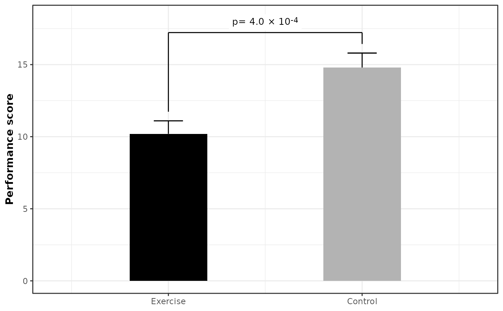
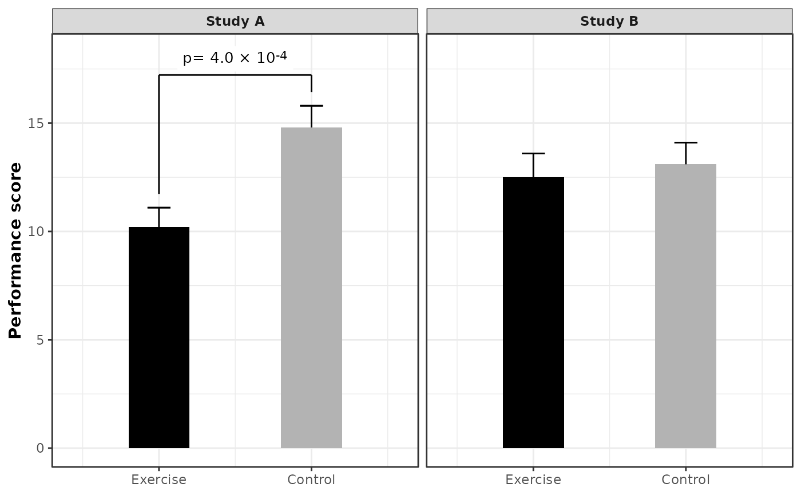
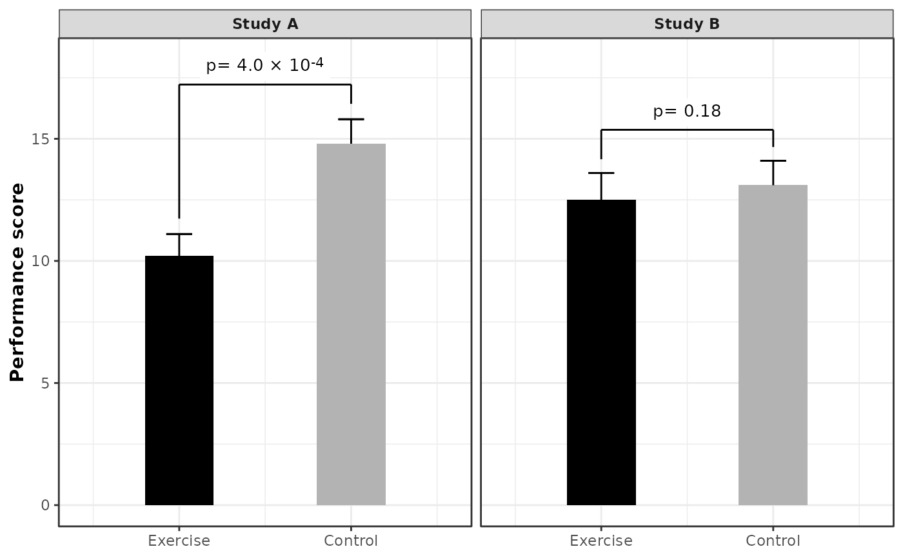
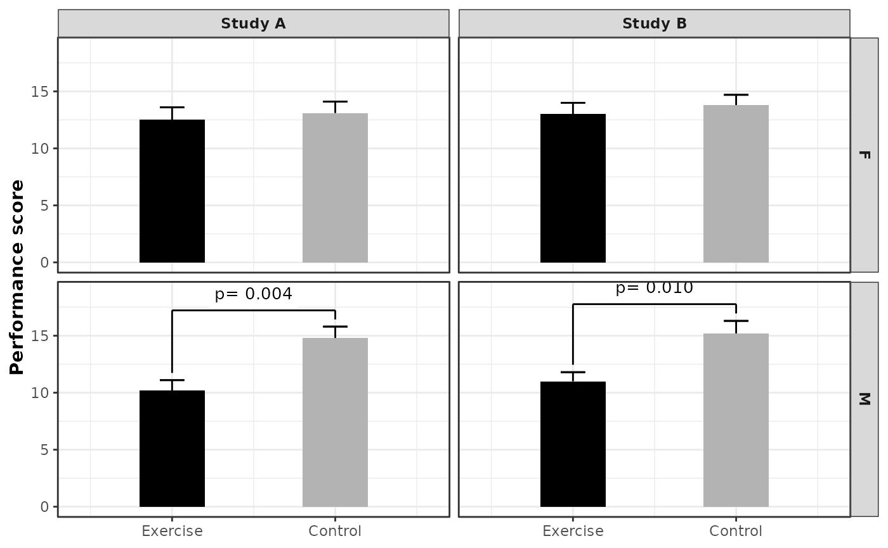
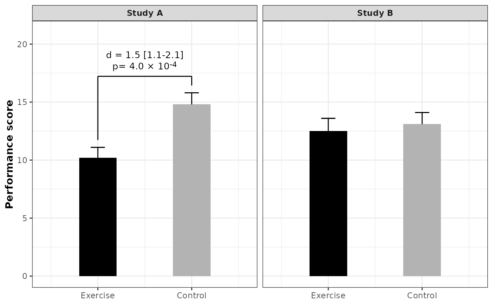
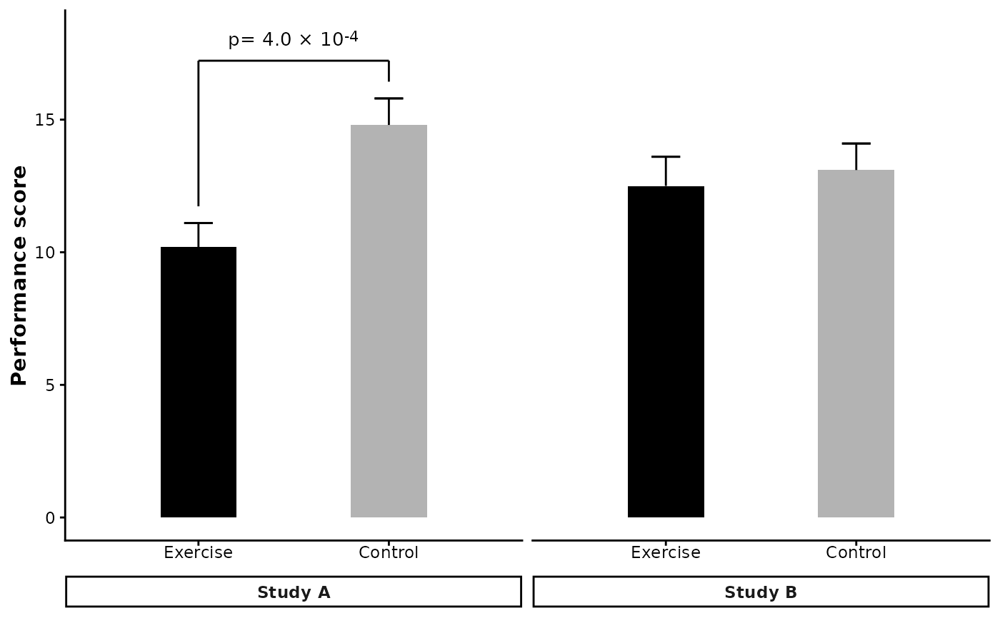
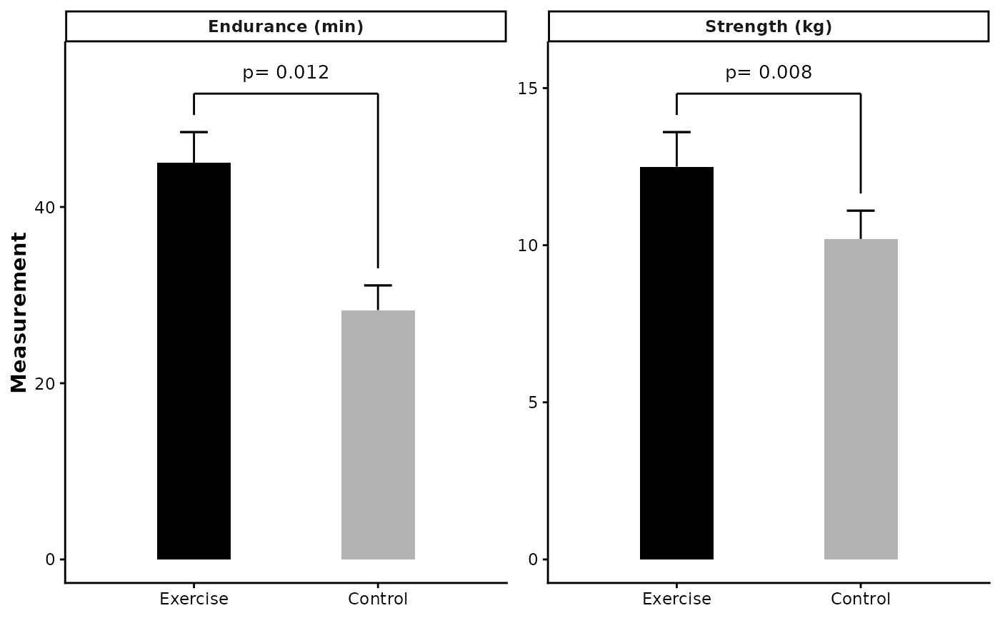

Bar plot comparing a numeric outcome between two conditions
Source:R/plot_barplot_by_group.R
plot_barplot_by_group.RdDraws a bar chart comparing a numeric outcome between exactly two conditions.
Bar height = mean (or any effect size); error bars span +/- 1 error unit
(SE, SD, CI half-width, etc.). A significance bracket with optional label is
drawn above bars when the corresponding p-value falls below p_cutoff.
Usage
plot_barplot_by_group(
df,
condition_col,
mean_col,
error_col,
p_col,
facet_cols = NULL,
label_col = NULL,
use_format_pvalue = TRUE,
error_direction = "up",
condition_order = NULL,
p_cutoff = 0.05,
y_label = "Outcome",
bar_colors = c("black", "grey70"),
bar_width = 0.4,
bar_gap = 0.6,
bar_padding = 0.5,
text_size = 3.5,
bracket_offset = 0.05,
bracket_gap = 0.04,
bracket_text_gap = 0.01,
bracket_scale = c("relative", "absolute"),
y_expand_top = 0.1
)Arguments
- df
Data frame in long format — one row per condition (and per faceting-group combination when faceting).
- condition_col
Column name for the two conditions to compare. Default
"condition".- mean_col
Column name for bar heights (means or effect sizes). Default
"mean".- error_col
Column name for error-bar half-widths (SE, SD, CI half-width, etc.). Default
"se".- p_col
Column name for p-values. When faceting, the value should be the same for both condition rows within each facet group (i.e. repeated). Set to
NULLto suppress brackets entirely. Default"p_value".- facet_cols
Optional character vector of column name(s) to use as faceting variables (e.g.
"study"orc("study", "sex")). When supplied, significance brackets are computed per unique combination of these columns, and the columns are retained in bracket annotation layers so that+ facet_wrap()or+ facet_grid()work correctly. DefaultNULL(single panel, no grouping for brackets).- label_col
Optional column name supplying custom bracket label text (e.g.
"OR = 1.5 [1.1-2.0], p = 0.012"). Labels can include HTML formatting for rich text rendering (e.g., superscripts like10<sup>-4</sup>). WhenNULL, labels are auto-formatted based on theuse_format_pvalueargument. DefaultNULL.- use_format_pvalue
Logical. When
TRUE(default), p-values are formatted usingformat_pvalue(). WhenFALSE, p-values are formatted usingpaste0("p = ", signif(p, 2)). Ignored iflabel_colis supplied. DefaultTRUE.- error_direction
Direction of error bars.
"both"drawsmean +/- error;"up"draws only the upper whisker (meantomean + error). Default"up".- condition_order
Length-2 character vector setting the left-to-right display order of the two conditions. Defaults to the existing factor level order or alphabetical.
- p_cutoff
Significance threshold; brackets appear only when
p < p_cutoff. Default0.05.- y_label
Y-axis label. Default
"Outcome".- bar_colors
Length-2 fill colour vector applied to the two conditions in the order given by
condition_order. Defaultc("black", "grey70").- bar_width
Width of the bars passed to
geom_col. Default0.4.- bar_gap
Gap between the two bars, in x-axis units. Default
0.6.- bar_padding
White space added to the left and right of the bars, in x-axis units. Passed to
ggplot2::expansion(add = bar_padding). Default0.5.- text_size
Size of bracket label text (ggplot2
sizeunits). Default3.5.- bracket_offset
Spacing added above bar tops for bracket placement. When
bracket_scale = "relative"(default), this is a fraction of the per-facet y range, ensuring consistent proportional spacing across facets even withscales = "free_y". Whenbracket_scale = "absolute", this is an absolute data unit. Default0.05.- bracket_gap
White space between the top of each error bar and the start of the significance bracket tick. When
bracket_scale = "relative"(default), this is a fraction of the per-facet y range. Whenbracket_scale = "absolute", this is an absolute data unit. Default0.04.- bracket_text_gap
White space between the horizontal bracket line and the label text above it. When
bracket_scale = "relative"(default), this is a fraction of the per-facet y range, ensuring consistent visual spacing across facets withscales = "free_y". Whenbracket_scale = "absolute", this is an absolute data unit. Default0.05.- bracket_scale
Controls how
bracket_offset,bracket_gap, andbracket_text_gapare interpreted."relative"(default) multiplies each value by the per-facet y range, giving consistent proportional spacing across facets withscales = "free_y"."absolute"uses the values as data units, most useful when multiple plots share the same y limits and scale.- y_expand_top
Fraction of the y-axis range to add above the bracket text to prevent clipping at the top of the plot. Default
0.1.
Value
A ggplot object. Add
+ ggplot2::facet_wrap() or + ggplot2::facet_grid() to
create multi-panel layouts; bracket annotations facet automatically.
Details
When facet_cols is supplied, the significance brackets are computed
separately for each unique combination of those columns and those columns are
retained in the annotation layers. This means adding
+ ggplot2::facet_wrap() or + ggplot2::facet_grid() after the
function call will correctly split both bars and brackets across panels.
Examples
library(ggplot2)
df <- data.frame(
study = rep(c("Study A", "Study B"), each = 2),
group = rep(c("Exercise", "Control"), 2),
mean = c(10.2, 14.8, 12.5, 13.1),
se = c(0.9, 1.0, 1.1, 1.0),
p_value = c(0.0004, 0.0004, 0.18, 0.18)
)
df$group <- factor(df$group, levels = c("Exercise", "Control"))
ggplot2::theme_set(theme_bw2())
# Single bar plot (no faceting)
df_a <- df[df$study == "Study A", ]
plot_barplot_by_group(
df = df_a,
condition_col = "group",
mean_col = "mean",
error_col = "se",
p_col = "p_value",
y_label = "Performance score"
)

# Facet by study using facet_wrap
plot_barplot_by_group(
df = df,
condition_col = "group",
facet_cols = "study",
mean_col = "mean",
error_col = "se",
p_col = "p_value",
y_label = "Performance score"
) +
ggplot2::facet_wrap(~study)

# Set p_cutoff = 1 to always show all p-values
plot_barplot_by_group(
df = df,
condition_col = "group",
facet_cols = "study",
mean_col = "mean",
error_col = "se",
p_col = "p_value",
y_label = "Performance score",
p_cutoff = 1
) +
ggplot2::facet_wrap(~study)

# facet_grid works too (useful with multiple facet_cols)
df_multi <- data.frame(
study = rep(c("Study A", "Study B"), each = 4),
sex = rep(c("M", "M", "F", "F"), 2),
group = rep(c("Exercise", "Control"), 4),
mean = c(10.2, 14.8, 12.5, 13.1, 11.0, 15.2, 13.0, 13.8),
se = c(0.9, 1.0, 1.1, 1.0, 0.8, 1.1, 1.0, 0.9),
p_value = c(0.004, 0.004, 0.18, 0.18, 0.01, 0.01, 0.25, 0.25)
)
df_multi$group <- factor(df_multi$group, levels = c("Exercise", "Control"))
plot_barplot_by_group(
df = df_multi,
condition_col = "group",
facet_cols = c("study", "sex"),
mean_col = "mean",
error_col = "se",
p_col = "p_value",
y_label = "Performance score"
) +
ggplot2::facet_grid(
rows = ggplot2::vars(sex),
cols = ggplot2::vars(study)
)

# Custom bracket label from a column
df$label <- ifelse(
df$p_value < 0.05,
paste0("d = 1.5 [1.1-2.1]<br>", format_pvalue(df$p_value)),
NA
)
plot_barplot_by_group(
df = df,
condition_col = "group",
facet_cols = "study",
mean_col = "mean",
error_col = "se",
p_col = "p_value",
y_label = "Performance score",
label_col = "label"
) +
ggplot2::facet_wrap(~study) +
ggplot2::coord_cartesian(ylim = c(0, 20))
#> Coordinate system already present.
#> ℹ Adding new coordinate system, which will replace the existing one.

# Using theme_classic2 with strip bars positioned below the plot
ggplot2::theme_set(theme_classic2())
plot_barplot_by_group(
df = df,
condition_col = "group",
facet_cols = "study",
mean_col = "mean",
error_col = "se",
p_col = "p_value",
y_label = "Performance score"
) +
ggplot2::facet_wrap(~study, strip.position = "bottom") +
ggplot2::theme(
axis.text.x = ggplot2::element_text(margin = ggplot2::margin(b = 5)),
strip.placement = "outside"
)

# Facet by outcome with different scales
# When outcomes are on different scales (e.g., one is 0-20, another is 0-200),
# use facet_wrap(scales = "free_y") to let each panel have its own y-axis range
df_outcomes <- data.frame(
outcome = rep(c("Strength (kg)", "Endurance (min)"), each = 2),
group = rep(c("Exercise", "Control"), 2),
mean = c(12.5, 10.2, 45.0, 28.3),
se = c(1.1, 0.9, 3.5, 2.8),
p_value = c(0.008, 0.008, 0.012, 0.012)
)
df_outcomes$group <- factor(df_outcomes$group, levels = c("Exercise", "Control"))
plot_barplot_by_group(
df = df_outcomes,
condition_col = "group",
facet_cols = "outcome",
mean_col = "mean",
error_col = "se",
p_col = "p_value",
y_label = "Measurement"
) +
ggplot2::facet_wrap(~outcome, scales = "free_y")
